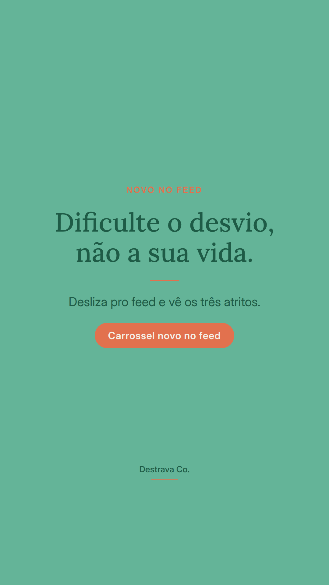
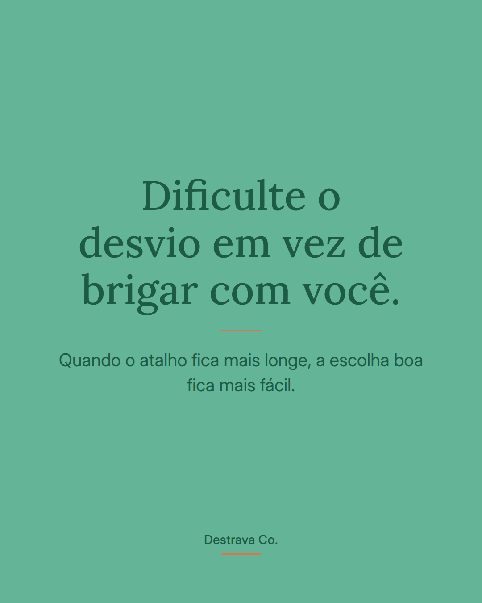
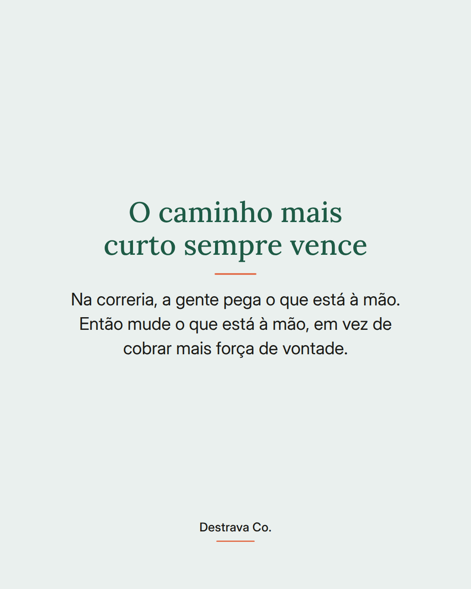
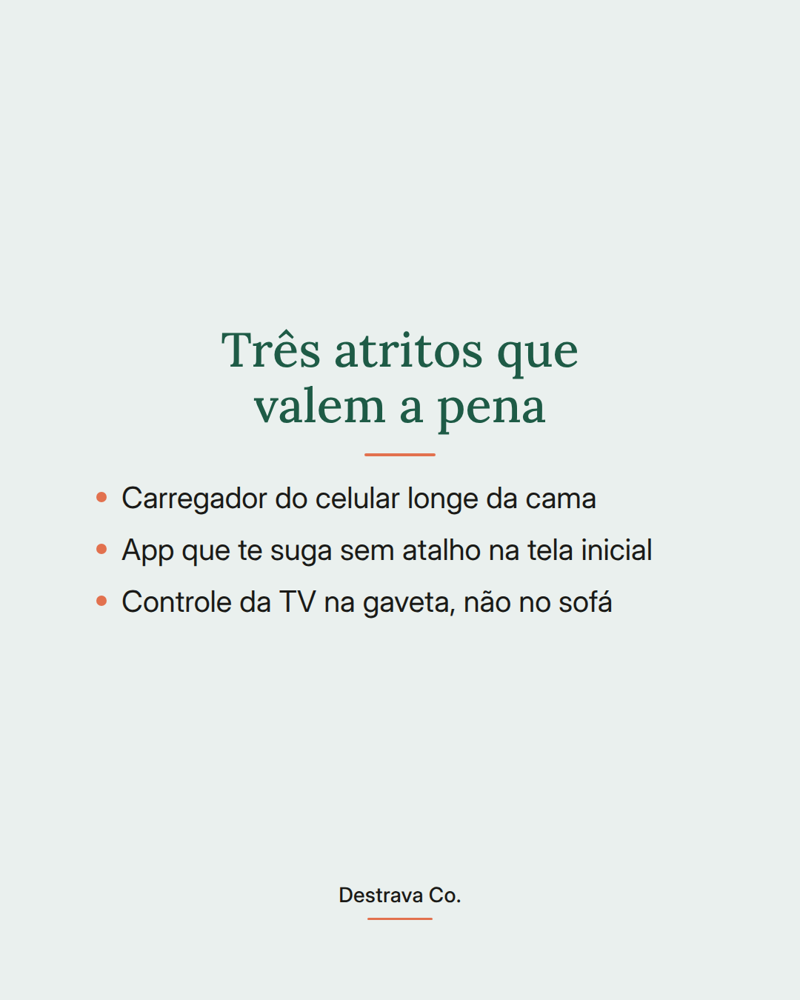
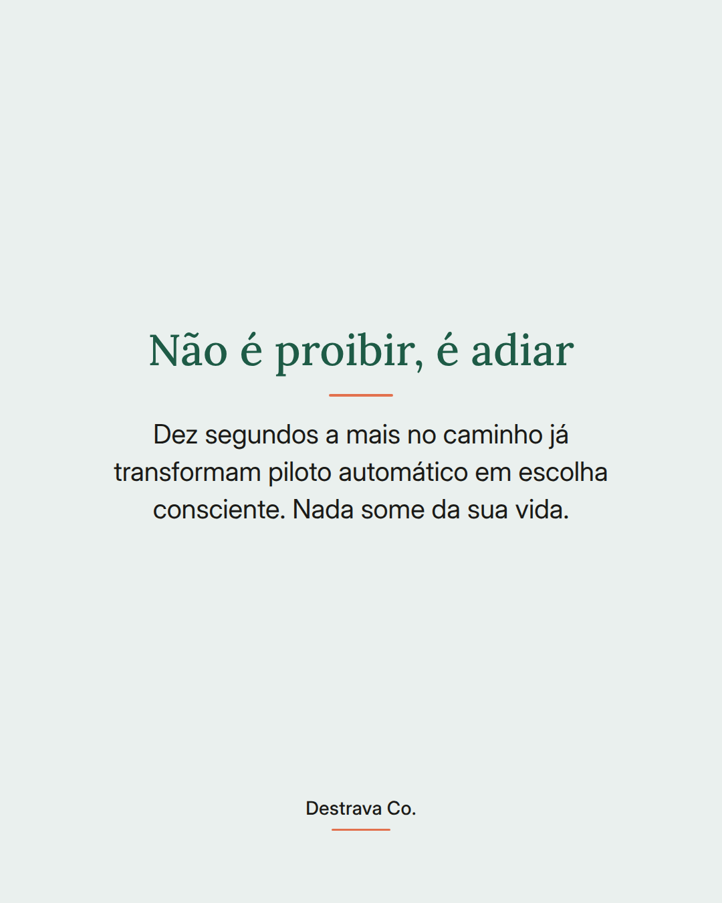
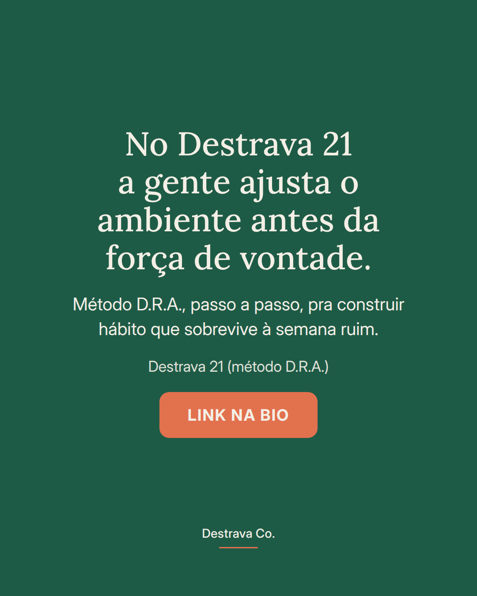

Hábito que sobrevive à semana ruim não depende de força de vontade, depende do que está mais perto da sua mão.
Na correria a gente pega o atalho. Celular na mesa de cabeceira, controle no sofá, aplicativo a um toque. Nada disso é falha de caráter, é desenho de ambiente.
A virada é simples: em vez de empurrar o hábito bom morro acima, coloque dez segundos a mais no caminho do desvio. Carregador na cozinha. Controle na gaveta. Tela inicial mais vazia. Só isso já devolve a chance de escolher.
Salva pra testar hoje à noite e compartilha com uma amiga que anda se culpando à toa. Se quiser montar isso com método, o Destrava 21 te guia pelo passo a passo.